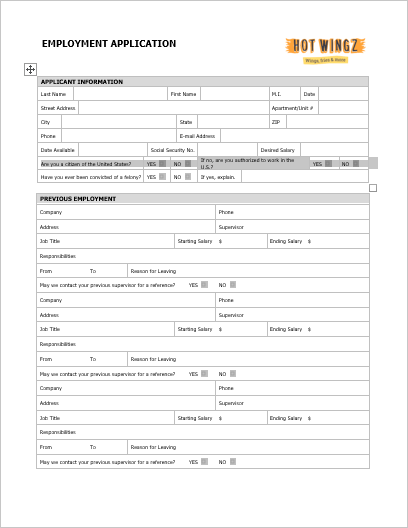
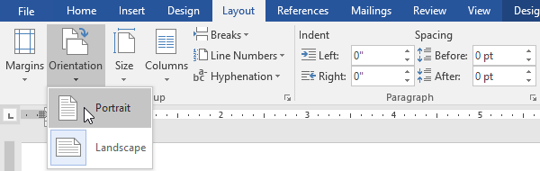
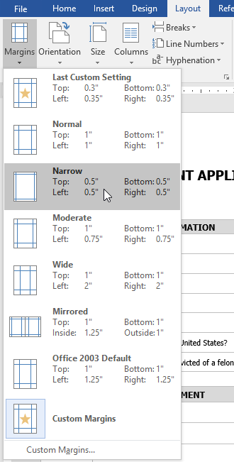
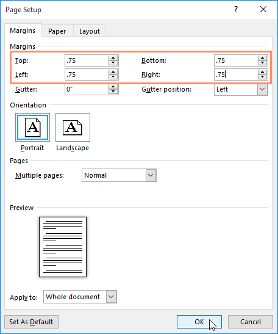
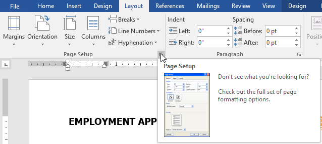
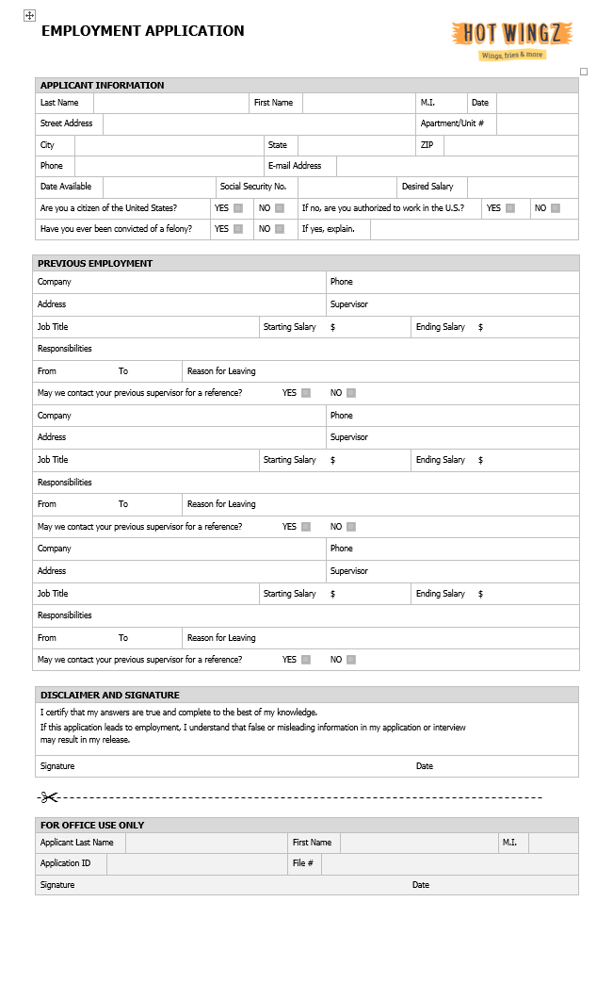

Orientasi halaman (Page orientation)
Word menawarkan dua opsi orientasi halaman: lanskap dan potret. Bandingkan contoh kami di bawah ini untuk melihat bagaimana orientasi dapat memengaruhi tampilan dan spasi teks dan gambar.
Lansekap berarti halaman berorientasi horizontal.

Potret berarti halaman diorientasikan secara vertikal.

Untuk mengubah orientasi halaman:
Pilih tab Tata Letak.
Klik perintah Orientation di grup Page Setup.

Menu tarik-turun akan muncul. Klik Portrait atau Landscape untuk mengubah orientasi halaman.

Orientasi halaman dokumen akan diubah.
Ukuran Kertas (Page Size)
Secara default, ukuran halaman dokumen baru adalah 8,5 inci kali 11 inci. Bergantung pada proyek Anda, Anda mungkin perlu menyesuaikan ukuran halaman dokumen Anda. Penting untuk dicatat bahwa sebelum mengubah ukuran halaman default, Anda harus memeriksa untuk melihat ukuran halaman mana yang dapat diakomodasi oleh printer Anda.
Untuk mengubah ukuran halaman:
Word memiliki berbagai ukuran halaman yang telah ditentukan untuk dipilih.
Pilih tab Layout, lalu klik perintah Size.

Menu tarik-turun akan muncul. Ukuran halaman saat ini disorot. Klik ukuran halaman standar yang diinginkan.

Ukuran halaman dokumen akan diubah.
Untuk menggunakan ukuran halaman khusus:
Word juga memungkinkan Anda untuk menyesuaikan ukuran halaman di kotak dialog Penyetelan Halaman.
Dari tab Tata Letak, klik Ukuran. Pilih Lebih Banyak Ukuran Kertas dari menu tarik-turun.

Kotak dialog Pengaturan Halaman akan muncul.
Sesuaikan nilai Width dan Height, lalu klik OK.

Ukuran halaman dokumen akan diubah.
Margin Halaman (Page Margins)
Sebuah marjin adalah ruang antara teks dan tepi dokumen Anda. Secara default, margin dokumen baru diatur ke Normal, yang berarti memiliki spasi satu inci antara teks dan setiap tepi. Tergantung pada kebutuhan Anda, Word memungkinkan Anda untuk mengubah ukuran margin dokumen Anda.
Untuk memformat margin halaman:
Word memiliki berbagai ukuran margin yang telah ditentukan untuk dipilih.
Pilih tab Layout, lalu klik perintah Margins.

Menu tarik-turun akan muncul. Klik ukuran margin yang telah ditentukan sebelumnya yang Anda inginkan.

Margin dokumen akan diubah.
Untuk menggunakan margin khusus:
Word juga memungkinkan Anda untuk menyesuaikan ukuran margin Anda di kotak dialog Penyetelan Halaman.
Dari tab Tata Letak, klik Margin. Pilih Margin Kustom dari menu tarik-turun.

Kotak dialog Pengaturan Halaman akan muncul.
Sesuaikan nilai untuk setiap margin, lalu klik OK.

Margin dokumen akan diubah.
Anda juga dapat membuka kotak dialog Penyetelan Halaman dengan menavigasi ke tab Tata Letak dan mengklik panah kecil di sudut kanan bawah grup Penyetelan Halaman.

Anda dapat menggunakan fitur Set as Default dari Word untuk menyimpan semua perubahan pemformatan yang telah Anda buat dan secara otomatis menerapkannya ke dokumen baru. Untuk mempelajari cara melakukannya, baca pelajaran kami tentang Mengubah Pengaturan Default Anda di Word.
Tantangan!
Buka dokumen latihan kami.
Ubah orientasi halaman menjadi Potret.
Ubah ukuran halaman menjadi Legal. Jika ukuran Legal tidak tersedia, Anda dapat memilih ukuran lain seperti A5.
Ubah margin ke pengaturan Sempit.
Setelah selesai, dokumen Anda harus menjadi satu halaman jika menggunakan ukuran Legal. Seharusnya terlihat seperti ini:
